السلسلة 2
الدراجة النارية (صنف A) · 20 سؤال. كل سؤال فيه الصورة والصوت. اختار الجواب (ولا جوج إلا كانو صحاح)، ورك على «تأكيد» باش تشوف واش صبتي.
- 20سؤال
- 16باش تنجح
- 1 – 4جواب واحد ولا أكثر
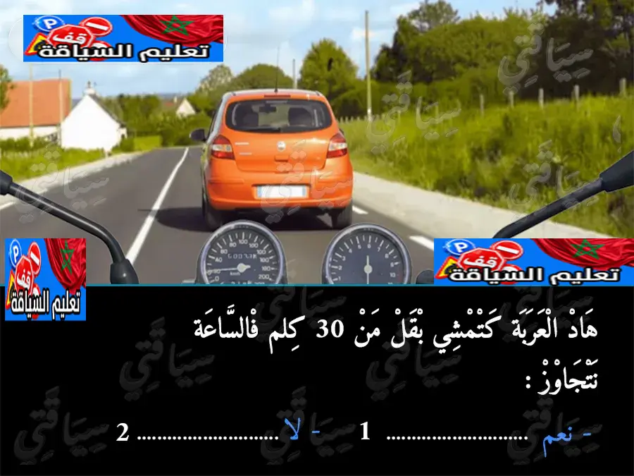
الكلافيي: 1–4 للجواب، Enter للتأكيد وللسؤال الجاي.
السلسلة 2 · النتيجة ديالك
0 / 20
السلسلة 2
الدراجة النارية (صنف A) · 20 سؤال، بالصوت، مع الجواب الصحيح والشرح.
السؤال 1
بيّن الجواب
الجواب الصحيح: 2
لا يمكنك التجاوز في هذه الحالة. السبب الرئيسي والواضح هو وجود خط متصل على يسارك. حسب مدونة السير المغربية، الخط المتصل يعني أنه ممنوع عليك منعاً كلياً أن تتخطاه أو حتى تسير فوقه. لكي تتجاوز السيارة التي أمامك، ستكون مضطراً لعبور هذا الخط، وهو ما يعتبر مخالفة خطيرة للقانون. واخا تكون السيارة تسير ببطء شديد (أقل من 30 كلم في الساعة)، هذه المعلومة لا تلغي أبداً المنع الذي يفرضه الخط المتصل. يجب عليك البقاء خلفها وانتظار مقطع من الطريق به خط متقطع يسمح لك بالتجاوز بأمان. الجواب الصحيح هو رقم 2.
السؤال 2
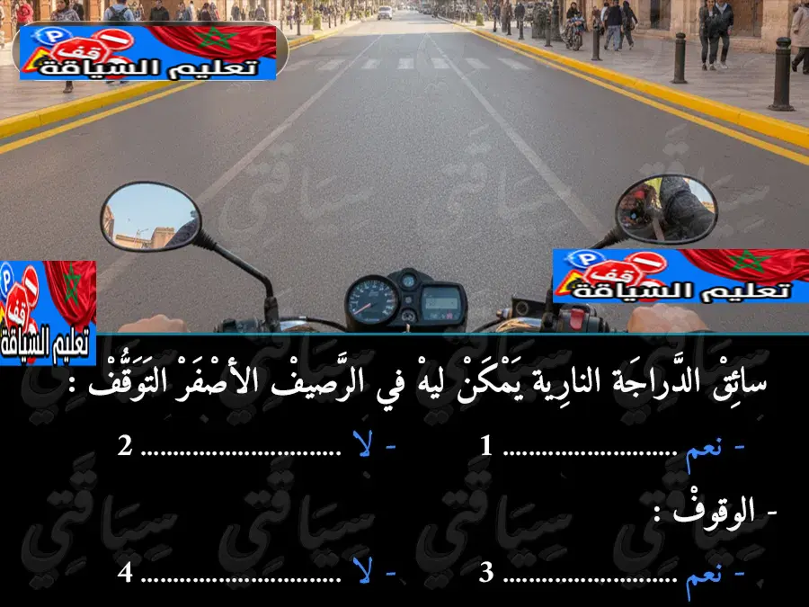
بيّن الجواب
الجواب الصحيح: 2 و 4
القاعدة في مدونة السير المغربية بسيطة وواضحة جداً: عندما يكون الرصيف (الطروطوار) مصبوغاً بخط أصفر متصل، فهذا يعني أن الوقوف والتوقف ممنوعان معاً على طول هذا الرصيف. يجب أن تتذكر أن (الوقوف) هو عندما تتوقف للحظات قصيرة (مثلاً لتنزيل راكب)، بينما (التوقف) هو عندما تركن الدراجة النارية وتغادرها. بما أن الرصيف الأصفر المتصل يمنع كلاً من الوقوف والتوقف، فلا يحق لسائق الدراجة النارية القيام بأي منهما في هذا المكان، تماماً مثل سائق السيارة. الجواب الصحيح هو رقم 2 و 4.
السؤال 3
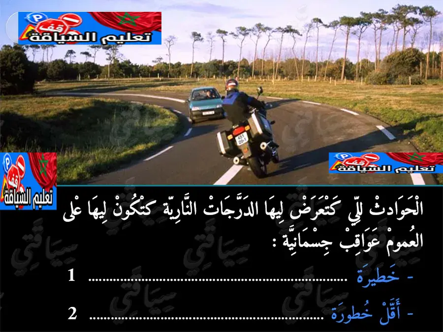
بيّن الجواب
الجواب الصحيح: 1
على عكس سائق السيارة اللي كيكون محمي بهيكل السيارة وحزام السلامة والوسائد الهوائية، سائق الدراجة النارية معندوش أي حماية من غير الخوذة والملابس ديالو. في حالة وقوع أي حادثة، ولو تكون بسيطة، الجسم ديال السائق هو اللي كيتلقى الصدمة مباشرة، وهادشي علاش الإصابات كتكون دائماً خطيرة، بحال الكسور والجروح البليغة والإصابات في الرأس. لهذا السبب، كنقولو ديما أن العواقب الجسمانية لحوادث الدراجات النارية هي على العموم خطيرة جداً. الجواب الصحيح هو رقم 1.
السؤال 4
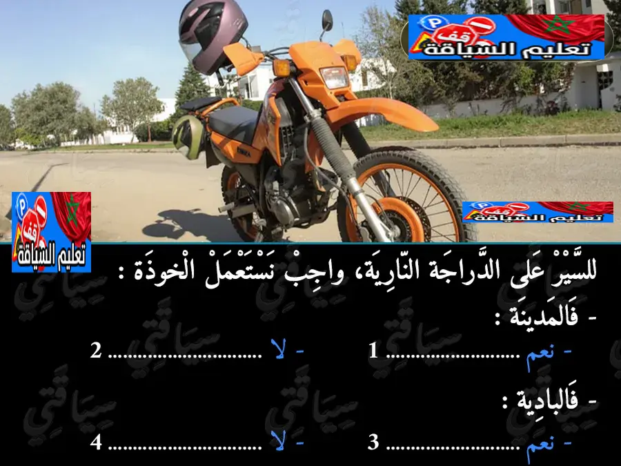
بيّن الجواب
الجواب الصحيح: 1 و 3
القاعدة في مدونة السير المغربية واضحة جداً ولا تقبل أي استثناء: ارتداء الخوذة (الكاسك) هو إجباري دائماً وفي كل الأماكن. القانون لا يفرق نهائياً بين السياقة داخل التجمعات السكنية (المدينة) أو خارجها (البادية أو الطريق السيار)، لأن خطر وقوع الحوادث والإصابات الخطيرة في الرأس يظل هو نفسه في كل مكان. لذلك، يجب أن تتذكر دائماً أن الخوذة ليست اختياراً مرتبطاً بالمكان الذي تقود فيه، بل هي واجب قانوني وأساسي لضمان سلامتك في جميع الظروف.
السؤال 5
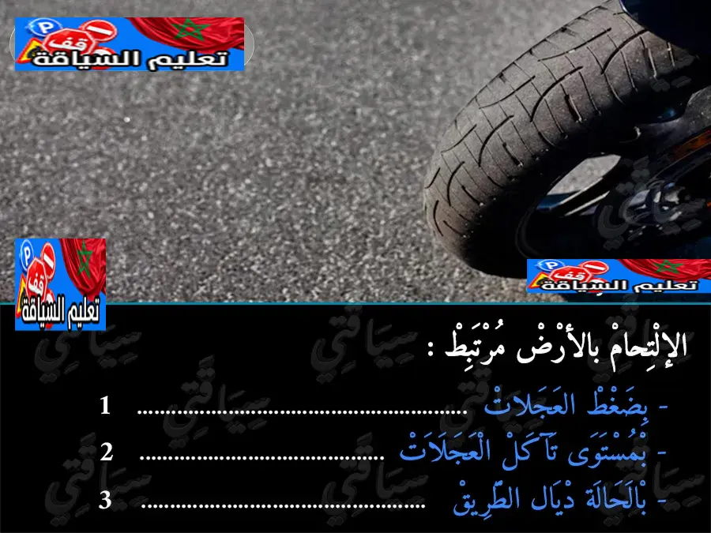
بيّن الجواب
الجواب الصحيح: 1 و 2 و 3
الالتحام بالأرض، أو بعبارة بسيطة (الشدّان ديال الرويض فالطريق)، مرتبط بهاد العوامل كلها وميمكنش نفرقو بيناتها. أولاً، ضغط العجلات مهم بزاف، لأن الرويضة إلا كانت منفوخة ناقصة أو زايدة على القياس، مساحة التلامس مع الطريق مكتكونش مثالية والشدان كيقل. ثانياً، مستوى تآكل العجلات كيلعب دور كبير، فكلما كان النقش ديال البنوات ممسوح، كلما نقصات القدرة ديالها على إخلاء الماء والغبار، وبالتالي الشدان كيضعاف و خطر الانزلاق كيزيد، خصوصاً فالشتا. وأخيراً، الحالة ديال الطريق هي عامل حاسم، فالشدان فطريق ناشفة ونقية ماشي هو نفسو فطريق فازكة، أو فيها الرملة أو الزيت، فهاد الحالات الالتحام كينقص بشكل كبير. إذن، هاد العوامل بثلاثة كتكامل باش تضمن ليك سلامتك. الجواب الصحيح هو رقم 1، 2 و 3.
السؤال 6
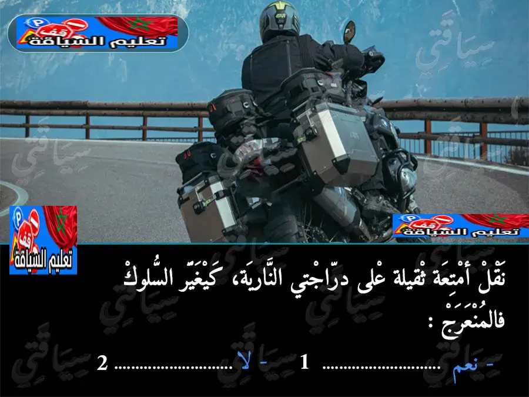
بيّن الجواب
الجواب الصحيح: 1
بكل تأكيد، فاش كتهز معاك أمتعة ثقيلة على الموطور، السلوك ديالو كيتبدل تماماً، وخصوصاً فالمنعرجات (الفراجات). السبب هو أن الوزن الزائد كيبدل مركز الثقل ديال الدراجة، وهادشي كيخليها تقيلة فالتحكم وأقل استقرار. فاش كتبغي تدور، غتحس بالدراجة مكتميلش معاك بسهولة كيف العادة، وكتولي محتاجة لمجهود أكبر باش تحافظ على المسار ديالك فالفراج. لهذا السبب، من الضروري تنقص من السرعة كثر وتكون أكثر حذراً فالتعامل مع المنعرجات فاش تكون الدراجة مشارجية. الجواب الصحيح هو رقم 1.
السؤال 7
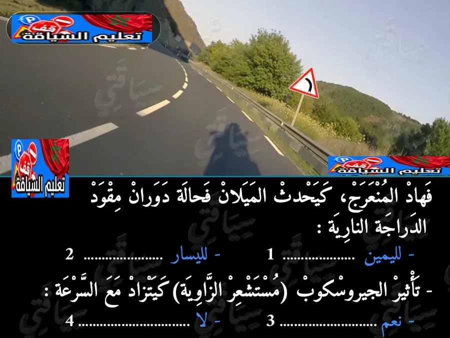
بيّن الجواب
الجواب الصحيح: 2 و 3
لكي تتمكن من الدوران في هذا المنعرج المتجه إلى اليسار، يجب عليك استخدام تقنية تسمى التوجيه العكسي. هذه التقنية تعني أنه يجب عليك دفع المقود (الڭيدون) بشكل خفيف إلى اليسار، وهذه الحركة هي التي ستؤدي إلى ميلان الدراجة نحو اليسار ودخولها في المنعرج بشكل آمن ومستقر. ثانياً، (التأثير الجيروسكوبي) هو القوة التي تخلقها العجلات أثناء دورانها، وهي التي تمنح الدراجة ثباتها وتجعلها تميل للبقاء في وضع عمودي. هذه القوة تزداد بشكل مباشر مع زيادة السرعة؛ فكلما كانت العجلات تدور بشكل أسرع، كلما زاد ثبات الدراجة، وهذا هو السبب الذي يجعل الدراجة النارية مستقرة جداً في السرعات العالية. الجواب الصحيح هو رقم 2 و 3.
السؤال 8
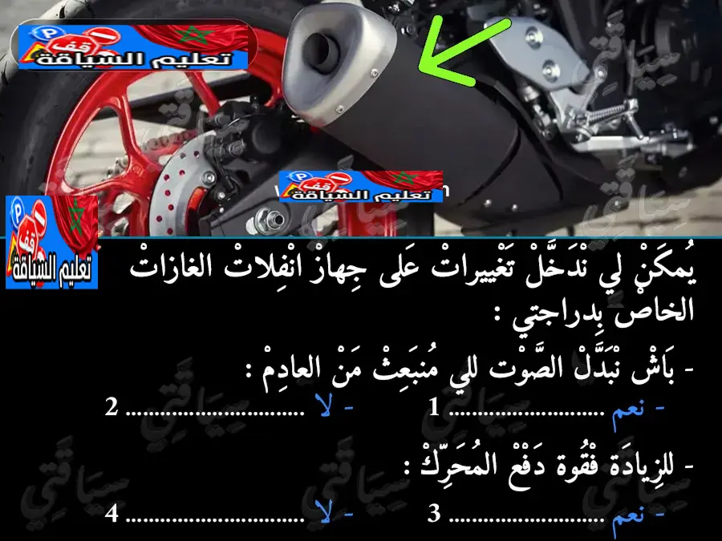
بيّن الجواب
الجواب الصحيح: 2 و 4
حسب مدونة السير المغربية، يُمنع منعاً كلياً إدخال أي تغييرات جوهرية على الخصائص التقنية للدراجة المسجلة في الورقة الرمادية (la carte grise). جهاز انفلات الغازات (أو الشاكمة) هو جزء أساسي من هذه الخصائص؛ فالشاكمة الأصلية تكون مصادق عليها لتحترم معايير محددة لمستوى الضجيج (الصوت) والانبعاثات. تغييرها بهدف تبديل الصوت غالباً ما يؤدي إلى إزعاج صوتي يتجاوز المسموح به قانونياً ويعتبر مخالفة. أما تغييرها لزيادة قوة المحرك، فهو أيضاً ممنوع لأنه يعتبر تعديلاً في أداء المحرك، وهو ما قد يؤثر سلباً على توازن وسلامة الدراجة ككل، حيث أن باقي مكوناتها (مثل الفرامل والهيكل) مصممة لتتحمل القوة الأصلية فقط. الجواب الصحيح هو رقم 2 و 4.
السؤال 9
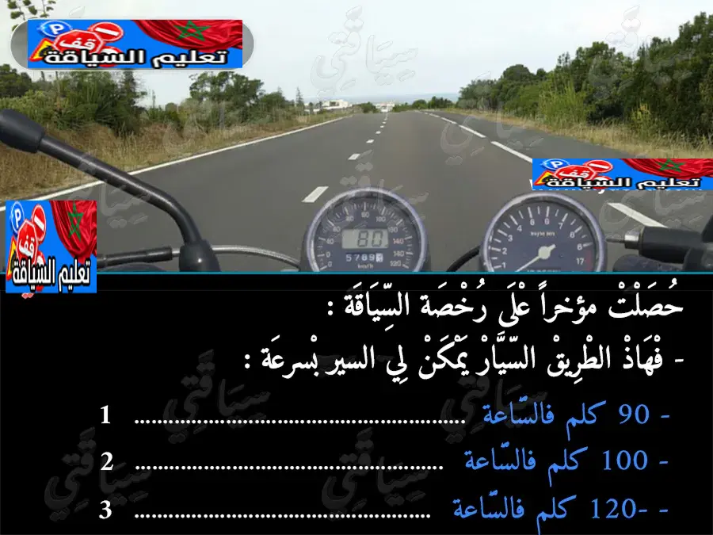
بيّن الجواب
الجواب الصحيح: 1
حسب مدونة السير المغربية، أي سائق يحصل على رخصة السياقة لأول مرة يدخل في ما يسمى بـ (الفترة الاختبارية)، والتي تستمر لمدة سنتين (عامين). خلال هذه الفترة، يفرض عليك القانون ألا تتجاوز سرعة 90 كيلومتراً في الساعة، وهذا القرار يطبق على جميع أنواع الطرق، بما في ذلك الطريق السيار (لوطوروت) الذي تكون فيه السرعة القصوى المسموح بها عادة هي 120 كلم/ساعة. الهدف من هذا الإجراء هو تمكين السائق الجديد من اكتساب الخبرة والتجربة الكافية في السياقة بأمان قبل السماح له بالقيادة بسرعات عالية. الجواب الصحيح هو رقم 1.
السؤال 10
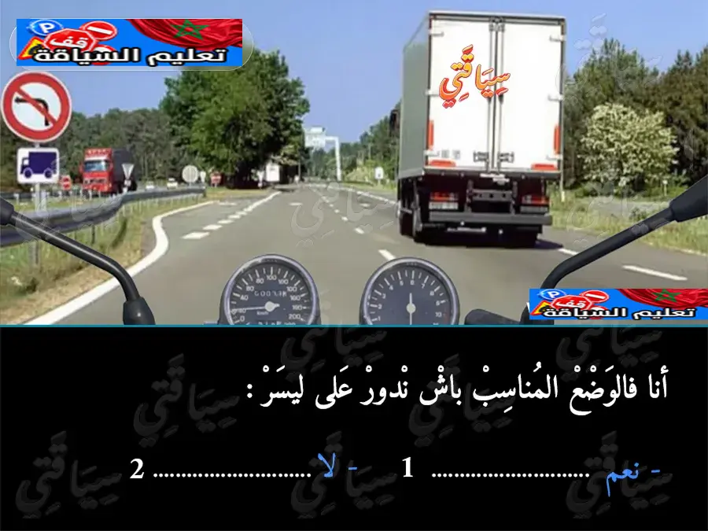
بيّن الجواب
الجواب الصحيح: 1
السائق في الوضع المناسب تماماً للدوران إلى اليسار لسببين واضحين: أولاً، تموضعه صحيح لأنه يتواجد في المسلك الموجود على أقصى اليسار، وهو المسلك المخصص للتحضير للانعطاف يساراً. ثانياً، ورغم وجود علامة تمنع الانعطاف لليسار، فإن العلامة التكميلية الصغيرة التي تحتها والتي تحمل رمز شاحنة، توضح أن هذا المنع يخص الشاحنات فقط ولا يطبق على باقي المركبات. بما أن السائق يقود دراجة نارية، فهذا المنع لا يعنيه، وبالتالي فوضعيته صحيحة تماماً للقيام بالانعطاف. الجواب الصحيح هو رقم 1.
السؤال 11
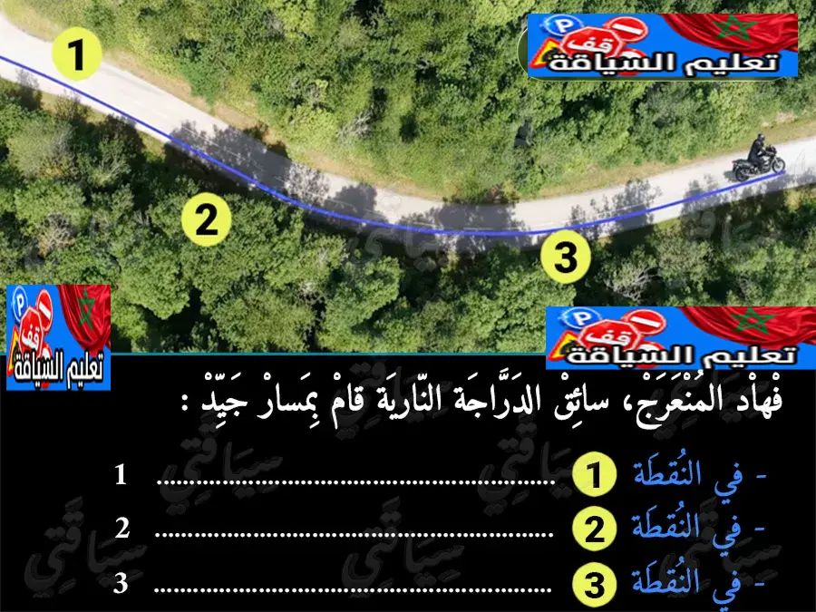
بيّن الجواب
الجواب الصحيح: 1 و 2
المسار الذي قام به السائق يعتبر جيداً فقط في النقطة 1 وفي النقطة 2. الشرح هو كالتالي: في النقطة 1، يتخذ السائق وضعية ممتازة على الجهة الخارجية للمنعرج، مما يمنحه أفضل رؤية ممكنة ومسافة أمان كبيرة عن الخط الفاصل. وفي النقطة 2، يصل السائق إلى ذروة المنعرج (الجهة الداخلية) وهو لا يزال يحافظ على مسار متحكم فيه داخل مسلكه. لكن، في النقطة 3، يصبح المسار غير جيد لأنه يقترب بشكل كبير من الخط المتصل الفاصل بين المسلكين، مما يقلل بشكل خطير من هامش الأمان مع السائقين القادمين من الاتجاه المعاكس. وبالتالي، يعتبر المسار آمناً ومثالياً فقط في المرحلتين الأولى والثانية من المنعرج، بينما يشكل خطراً في مرحلة الخروج. الجواب الصحيح هو رقم 1 و 2.
السؤال 12
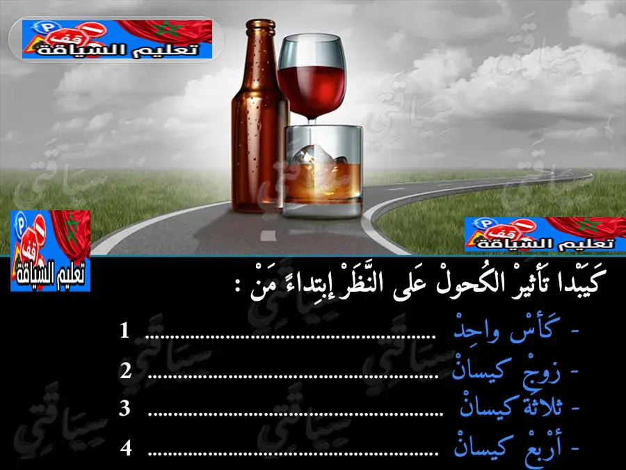
بيّن الجواب
الجواب الصحيح: 1
من الضروري جداً أن تعرف أن تأثير الكحول على الدماغ والجهاز العصبي يبدأ من أول كأس تشربه، حتى لو كنت تشعر بأنك في كامل وعيك. من الناحية العلمية، بمجرد دخول الكحول إلى الدم، يبدأ في إبطاء وظائف الدماغ، وهذا يؤثر بشكل مباشر على النظر؛ حيث يتقلص مجال الرؤية الجانبية (لا تعود ترى جيداً في الجوانب)، ويصبح من الصعب تقدير المسافات وسرعة السيارات الأخرى، كما تضعف القدرة على التمييز بين الأضواء ليلاً. لهذا السبب، يعتبر القانون أن الخطر يبدأ من الكأس الأول، لأن قدراتك كسائق تبدأ في التدهور من تلك اللحظة، مما يشكل خطراً كبيراً عليك وعلى مستعملي الطريق الآخرين. الجواب الصحيح هو رقم 1.
السؤال 13
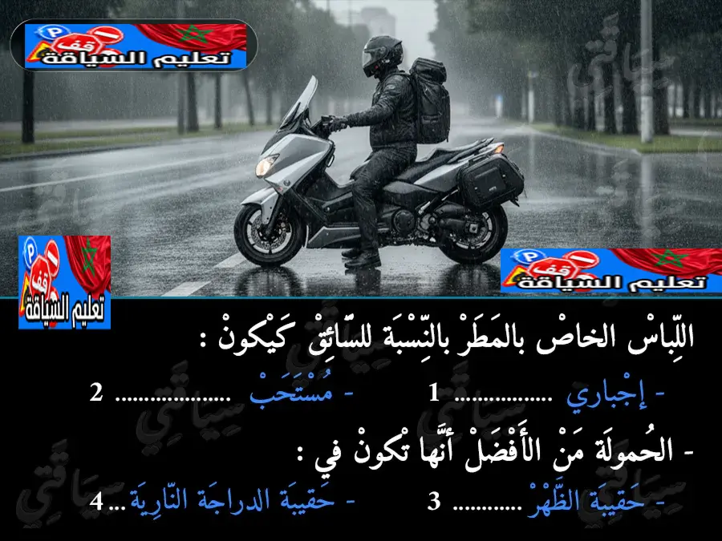
بيّن الجواب
الجواب الصحيح: 2 و 4
بالنسبة للباس الخاص بالمطر، فهو ليس (إجبارياً) في القانون، لأن مدونة السير تفرض فقط ارتداء الخوذة كإجراء إلزامي، ولكنه (مستحب) وموصى به بشدة لأنه يحمي السائق من البرد والبلل، مما يساعده على التركيز ويجعله أكثر وضوحاً للسائقين الآخرين. أما بخصوص الحمولة، فمن الأفضل دائماً وضعها في حقيبة خاصة بالدراجة (مثل الصندوق الخلفي أو الحقائب الجانبية) لأنها تكون مثبتة في هيكل الدراجة وتحافظ على مركز ثقل منخفض ومستقر. حمل أمتعة ثقيلة في حقيبة الظهر يرفع من مركز الثقل ويؤثر سلباً على توازن السائق، خصوصاً في المنعرجات أو عند الفرملة، مما يجعله خياراً أقل أماناً. الجواب الصحيح هو رقم 2 و 4.
السؤال 14
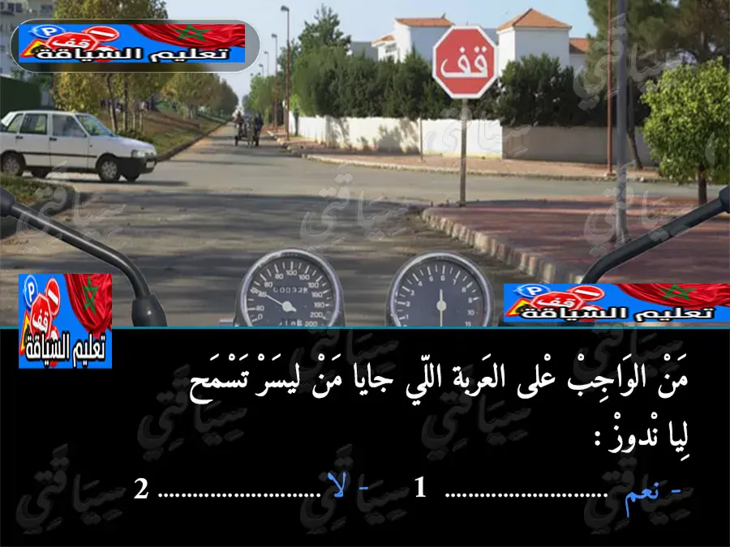
بيّن الجواب
الجواب الصحيح: 2
فإن سائق الدراجة النارية لديه علامة (قف). هذه العلامة تفرض عليه الوقوف وقوفاً تاماً عند حدود ملتقى الطرق، والأهم من ذلك، تجبره على إعطاء حق الأسبقية لجميع مستعملي الطريق القادمين من الطريق الآخر، سواء كانوا من جهة اليمين أو من جهة اليسار. في هذه الحالة، العربة قادمة من اليسار، وبالتالي فهي التي تملك حق الأسبقية، وعلى سائق الدراجة النارية الانتظار حتى تمر هي أولاً. إذن، ليس من الواجب على العربة أن تسمح له بالمرور. الجواب الصحيح هو رقم 2.
السؤال 15
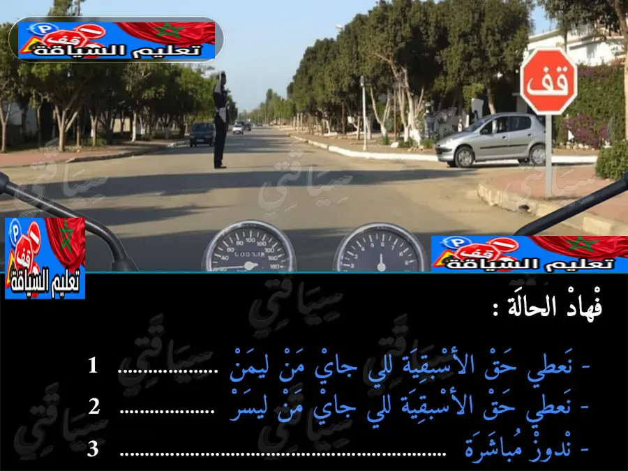
بيّن الجواب
الجواب الصحيح: 3
القاعدة الأساسية في قانون السير تقول أن إشارات الشرطي تلغي جميع الإشارات الأخرى، بما في ذلك الأضواء الثلاثية والعلامات الطرقية (مثل علامة (قف) الموجودة في الصورة). في هذه الحالة، الشرطي يقف بوضعية جانبية بالنسبة لك (عاطيك بالجنب)، وهذه الوضعية تعني الإذن بالمرور. بما أن إشارة الشرطي هي التي يجب تطبيقها، فيجب عليك تجاهل علامة (قف) تماماً والمرور مباشرة دون التوقف ودون إعطاء الأسبقية لليمين أو لليسار. الجواب الصحيح هو رقم 3.
السؤال 16
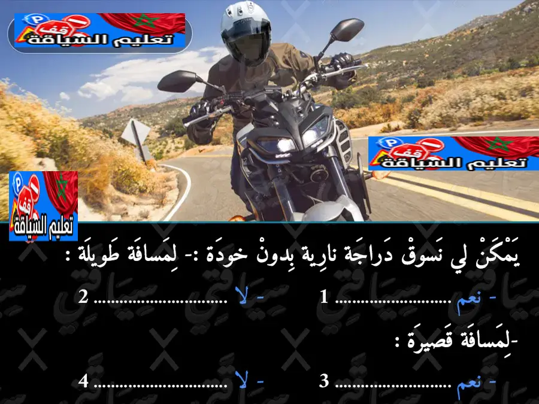
بيّن الجواب
الجواب الصحيح: 2 و 4
حسب مدونة السير المغربية، القاعدة بسيطة وصارمة: ارتداء الخوذة (الكاسك) هو إجباري دائماً وبدون أي استثناء. القانون لا يفرق نهائياً بين السياقة لمسافة طويلة أو مسافة قصيرة، أو داخل المدينة أو خارجها. سواء كنت ستقود الدراجة لدقائق معدودة أو لساعات، أو حتى إذا كنت ستحركها لأمتار قليلة فقط، فأنت ملزم قانوناً بارتداء الخوذة. والسبب واضح: الحوادث الخطيرة يمكن أن تقع في أي لحظة وفي أي مكان، وحماية الرأس هي الأولوية المطلقة لضمان سلامتك. الدواب الصحيح هو رقم 2 و 4.
السؤال 17
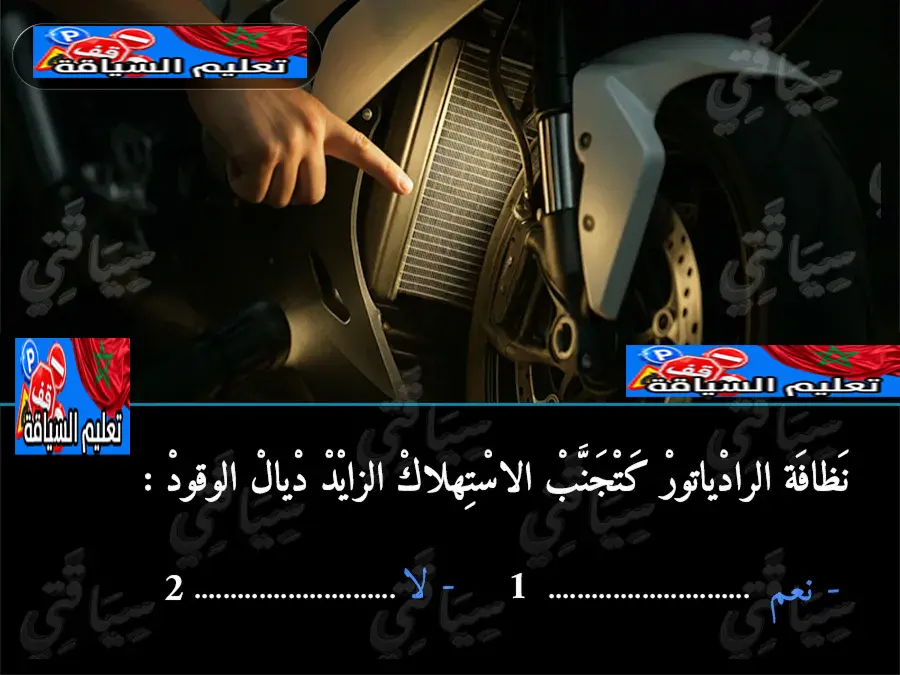
بيّن الجواب
الجواب الصحيح: 1
الرادياتور هو جزء أساسي في نظام تبريد المحرك، ودوره هو تخليص المحرك من الحرارة الزائدة. عندما يكون الرادياتور متسخاً ومسدوداً بالأتربة أو الحشرات، فإن عملية التبريد لا تتم بشكل جيد، مما يؤدي إلى ارتفاع درجة حرارة المحرك. ولكي يعوض المحرك هذا النقص في التبريد، فإنه يضطر للعمل بجهد أكبر، وهذا الجهد الإضافي يستهلك كمية أكبر من الوقود. إذن، الحفاظ على نظافة الرادياتور لا يساعد فقط على حماية المحرك من الأعطال، بل يساهم أيضاً في ضمان عمله بكفاءة مثالية، وبالتالي تجنب الاستهلاك الزائد للوقود. الجواب الصحيح هو رقم 1.
السؤال 18
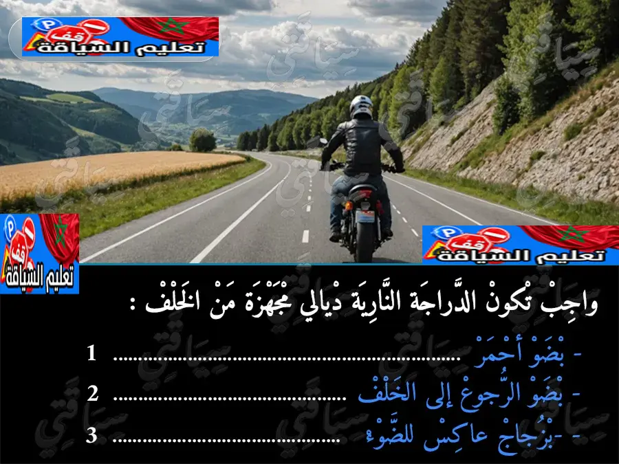
بيّن الجواب
الجواب الصحيح: 1 و 3
حسب مدونة السير المغربية، فإن كل دراجة نارية يجب أن تكون مجهزة إجبارياً من الخلف بضوء أحمر ثابت (ضوء الوضعية أو الفيوز) ليجعلها مرئية ليلاً، وكذلك بزجاج عاكس للضوء الذي يعكس أضواء السيارات الأخرى في الظلام، مما يزيد من وضوح الدراجة ويجعلها أكثر أماناً. أما بالنسبة للجواب رقم 2 (ضوء الرجوع إلى الخلف)، فهو خاطئ لأن هذا الضوء يكون إجبارياً في السيارات، ولكنه ليس من التجهيزات الإجبارية في الدراجات النارية. الجواب الحيح هو رقم 1 و 3.
السؤال 19
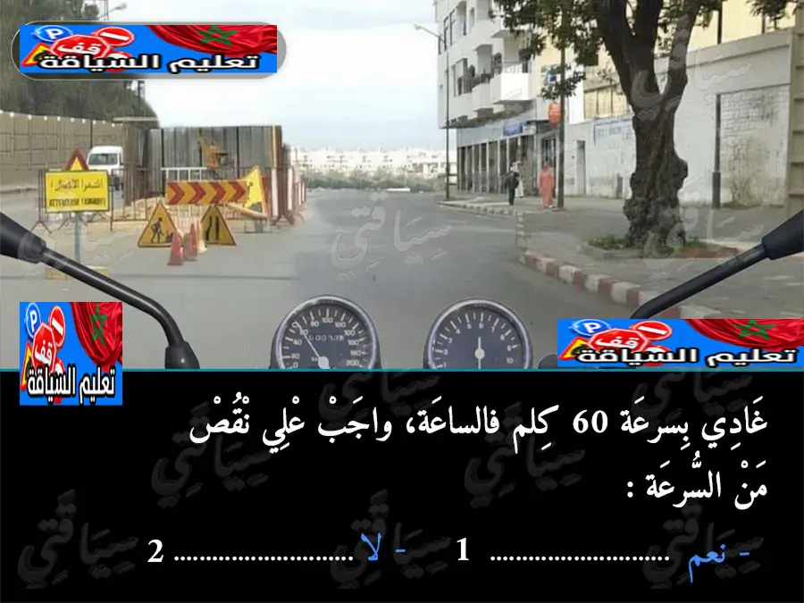
بيّن الجواب
الجواب الصحيح: 1
من الواجب عليك أن تنقص من السرعة. في هذه الحالة، هناك سببان رئيسيان يفرضان عليك ذلك: أولاً، أنت تقترب من منطقة أشغال، كما هو واضح من علامات الخطر المثلثة ذات اللون الأصفر، والقانون يفرض دائماً تخفيض السرعة عند وجود أي خطر محتمل. ثانياً، أنت تسير داخل تجمع سكني (في المدينة)، حيث أن السرعة القصوى المسموح بها عموماً هي 60 كلم في الساعة، ولكن هذه السرعة القصوى لا تعني أنه يجب عليك السياقة بها دائماً، بل يجب عليك تكييف سرعتك حسب الظروف. وبما أن هناك منطقة أشغال، فالظروف تفرض عليك تخفيض السرعة بشكل كبير لضمان سلامتك وسلامة العمال ومستعملي الطريق الآخرين. الجواب الصحيح هو رقم 1.
السؤال 20
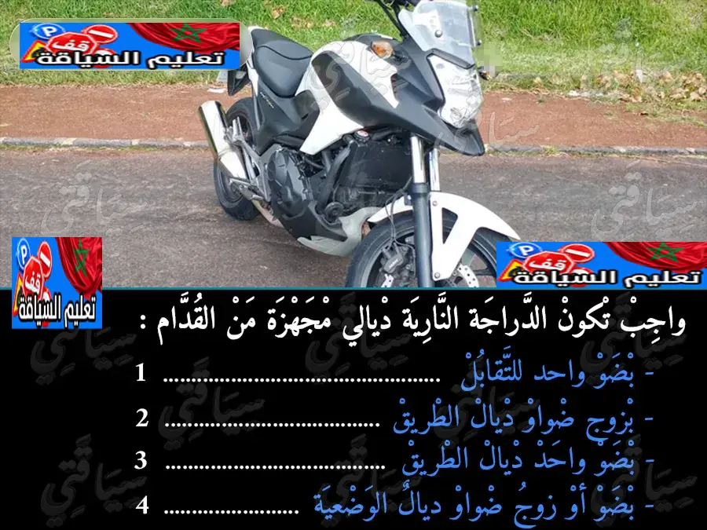
بيّن الجواب
الجواب الصحيح: 1 و 3 و 4
حسب مدونة السير المغربية، فإن الدراجة النارية يجب أن تكون مجهزة إجبارياً من الأمام بضوء واحد للتقابل (الكود) على الأقل (الجواب 1)، وبضوء واحد للطريق (الفار) على الأقل (الجواب 3)، وأيضاً بضوء واحد أو ضوأين للوضعية (الفيوز) (الجواب 4). هذه الأضواء الثلاثة كلها إلزامية لضمان رؤية جيدة للسائق ورؤيته من قبل الآخرين في مختلف الظروف. أما الجواب رقم 2 فهو خاطئ، لأن القانون لا يفرض وجود ضوأين للطريق، بل ضوء واحد كحد أدنى. الجواب الصحيح هو رقم 1 ، 3 و 4.